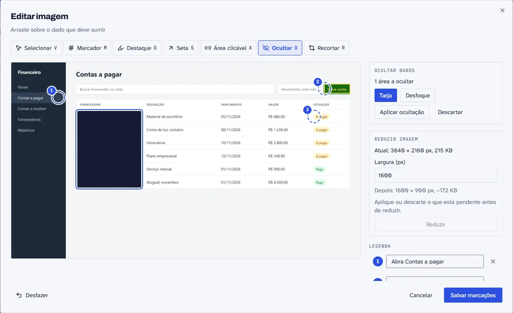
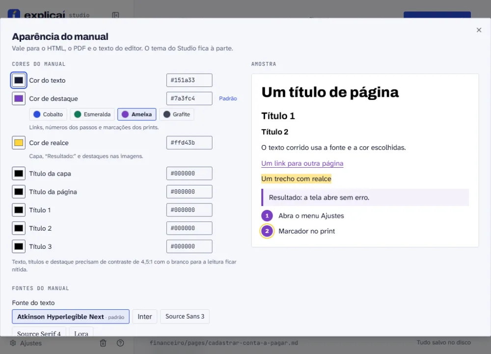
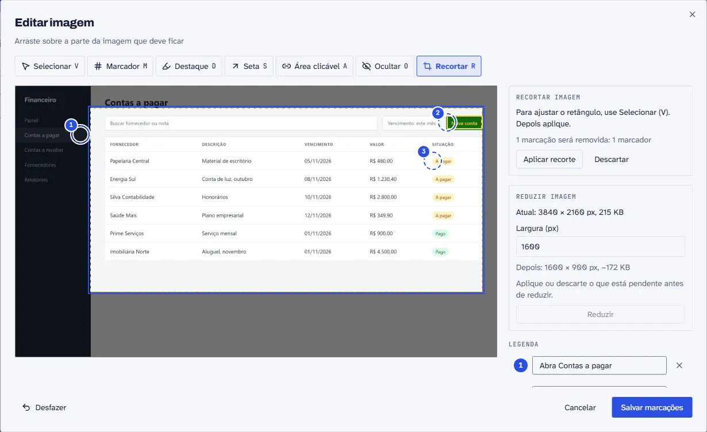
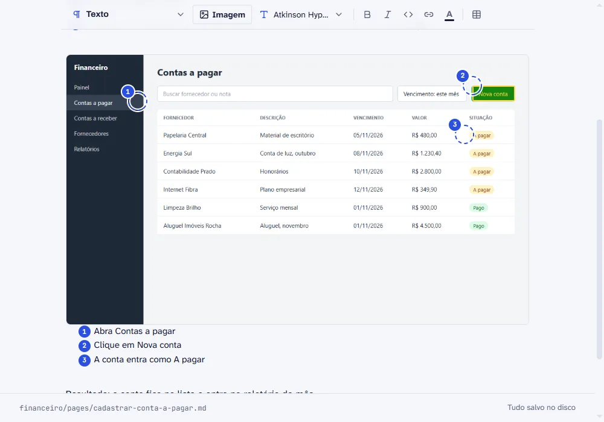
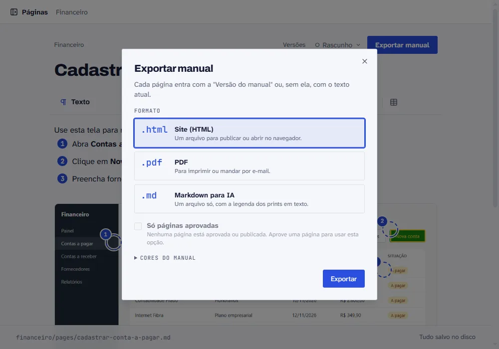

Recursos · Studio 0.2
Do print solto ao manual do cliente.
O Studio cuida do que vem depois do print colado: esconder dado sensível, vestir o manual com a marca do cliente, revisar e exportar.
Esconda o dado do cliente antes de o print sair da sua máquina.
Selecione a área com a ferramenta Ocultar (tecla O) e escolha tarja ou desfoque. O Studio grava o efeito nos pixels da imagem e apaga o original. Não sobra camada para alguém remover depois.
- Tarja ou desfoque forte. A tarja é o padrão. O desfoque pixela e borra a área.
- Original apagado. Se a pasta do manual está no git, o Studio avisa antes.
- Exports antigos. O lembrete na tela diz que HTML e PDF já gerados ainda têm o original. Gere de novo.
- Sem aplicar, nada acontece. Sair sem aplicar a ocultação pede confirmação.

O manual sai com a cara do cliente.
No diálogo de exportação você sobe o logo e escolhe as cores e a fonte. Cada manual guarda o seu tema, então o visual de um cliente não vaza para o de outro.
- Logo na capa. Aparece também no topo do sumário, no HTML e no PDF. Aceita PNG, JPG e SVG.
- Cores do tema. Texto, destaque, realce e cada nível de título, com paletas prontas e o código da cor.
- Nove fontes. Archivo, Atkinson Hyperlegible Next, Inter, Source Sans 3, Source Serif 4, Lora, Montserrat, Playfair Display e JetBrains Mono. Vão junto do HTML exportado, sem depender de rede.
- Aviso de contraste. O diálogo avisa quando a cor escolhida não chega a 4,5:1 com o branco.

Corte, dimensione e emagreça o print.
Print de tela cheia pesa e distrai. Recorte o que importa, escolha quanto espaço a imagem ocupa e reduza o arquivo.
- Recortar (R). As marcações acompanham o corte, e a confirmação lista as que vão sumir.
- Tamanho. Pequena, Média ou Larga. Fica guardado ao lado da imagem e vale no editor, no HTML e no PDF.
- Reduzir resolução e peso. Sugere 1600 px de largura e nunca amplia a imagem.

Marque a tela e explique cada ponto.
Marcadores numerados, destaques, setas e áreas clicáveis, com uma legenda para cada número. A mesma marcação aparece no editor, no HTML e no PDF.
- Atalhos de letra. V seleciona, M marca, D destaca, S desenha seta, A cria área clicável.
- Área clicável. Um ponto do print vira link para outra página do manual.
- Legenda. Quem lê vê o número e o que ele mostra, logo abaixo da imagem.

Revise antes de mandar.
Cada página tem um status, e o manual final pode levar só o que foi aprovado.
- Status por página. Rascunho, em revisão, aprovada, publicada: aparece no topo do editor.
- Só páginas aprovadas. Opção da exportação para o cliente não receber texto pela metade.
- Versões. Marque a “Versão do manual” que vale como final. A exportação usa ela ou, sem ela, o texto atual.
Um editor que não atrapalha a escrita.
Texto, passos e imagens na mesma página, com os blocos que um manual pede.
- Alertas. Salvos como alerta GFM e exportados com rótulo em texto e cor por tipo.
- Menu
/. Blocos agrupados, com prévia. - Tabelas. Controles de linha e coluna direto na tabela.
- Cor do texto. Paleta fixa, com o nome de cada cor.
- Colar print. Botão e Ctrl+V à vista.
> [!WARNING]
> Confira o vencimento antes de salvar.PDF para ler, HTML para publicar, Markdown para a IA.
Um clique gera o formato. O Markdown sai em um arquivo só, com a legenda dos prints em texto.
PDFPara imprimir ou mandar por e-mail.HTMLUm arquivo para publicar ou abrir no navegador.MDUm arquivo só, com a legenda dos prints em texto.
Roda na sua máquina. Sem conta, sem nuvem.
O Studio abre em localhost e salva numa pasta sua: Markdown e imagens, versionados no git ao lado do código. Licença MIT.
- Sem conta. Nada para cadastrar e nada enviado para fora.
- Edição fora do Studio. Se outro editor mexer na página, o Studio avisa em vez de sobrescrever.
- Português e inglês. A interface troca de idioma. O manual fica no idioma em que você escrever.
Tira o print e explica. O Explicaí monta o manual.
npx explicai manuais
Precisa de Node 20.12 ou mais novo.